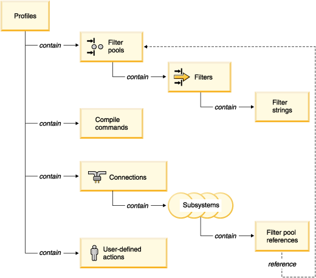

The Remote System Explorer is a set of local client tools you use to
organize
how you want to work with the resources such as folders and files on
your
remote server. The following graphic serves as an introduction to
some of the main components of the Remote System Explorer:

The Remote System Explorer perspective is designed to allow you to manipulate the resources directly on the remote system. The actions that are available depend on the type of system you are connecting to and the way the resource is recognized. For example, your selections can define a filter string to find all files that match *.c in a particular directory.
If you have been using the Remote System Explorer for some time, your workspace might contain too many filters to navigate easily. Or, you might just want to keep groups of filters separate if, for example, you need to represent two distinct environments in the Remote System Explorer, regardless of how many filters you have. In either case, you can group filters into filter pools.
For example, one filter pool could contain filters for an accounts receivable program while another contains filters for a payroll program. Or, if you have two different environments on your server: a production environment and a test environment, you can define a distinct environment and set of filters for each.
Without filter pools, all of your filters appear together in all connections. When you create filter pools, however, any filter you create within that filter pool is distinct to that connection, and will not appear in any other connections. (See the related links for more information about filter pools.)
You can share filter pools among many connections through the use of a filter pool reference. A filter pool reference is a mechanism that displays a filter pool from one connection in any other connection, so that when you make a change to the original filter pool, your change is reflected your filter pool reference.
All connections, filters, filter pools, and so on, belong to a
Remote System Explorer profile, that you define during your
first connection
to a server. You might wonder what happens to your filters or filter
pools if you delete a connection, especially if you have filters shared
among
two or more connections. Rest assured that the filters are not deleted,
since
filters actually belong to profiles, and not connections.
Keep in mind that if you need to have an entirely new configuration of filter pools, filters and connection in the Remote System Explorer, you can always create a new profile. See the related links for more information.
Related concepts
User actions (user options)
Compiling
Related Tasks
Configuring filter pools
Changing
filters
Deleting filters
Creating a second
profile